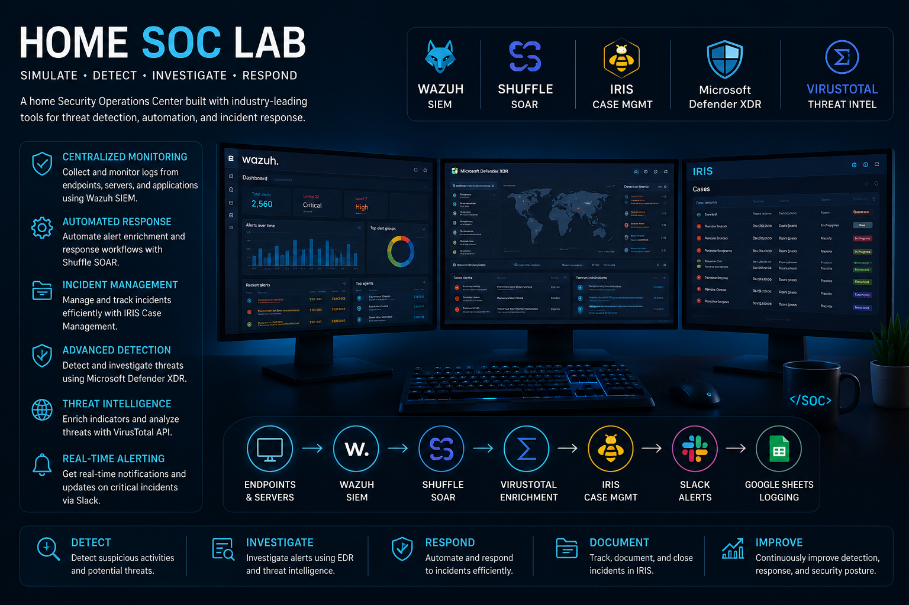
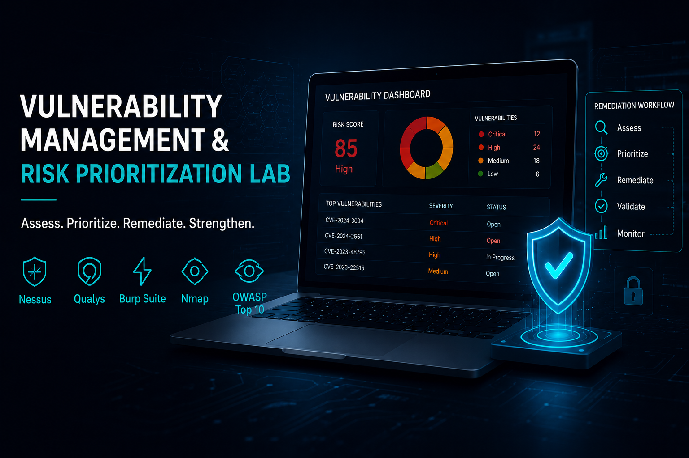
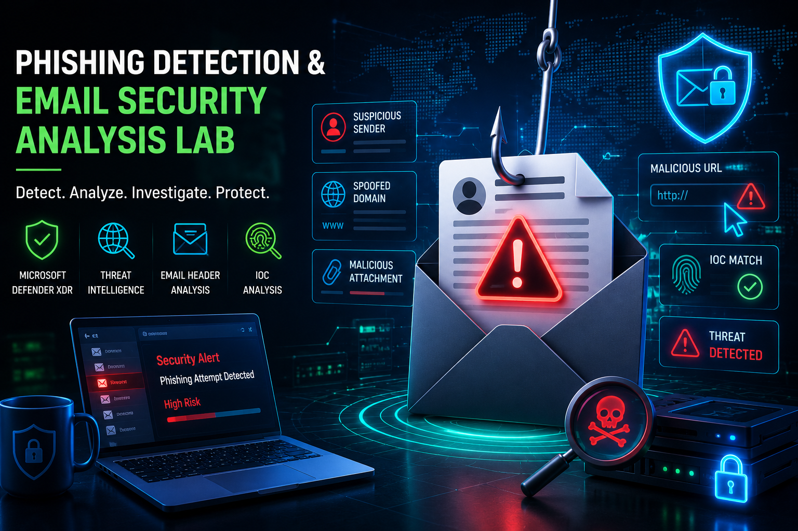
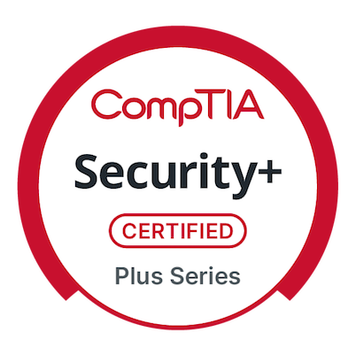
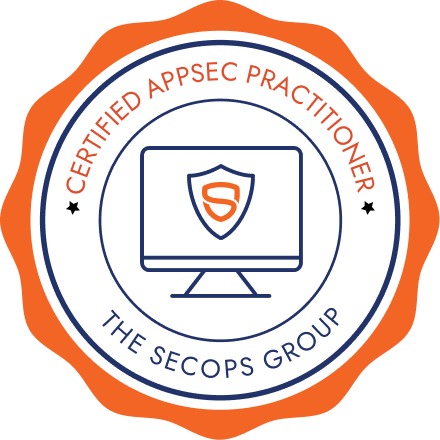
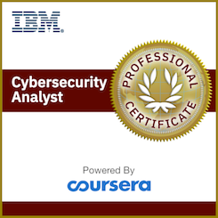
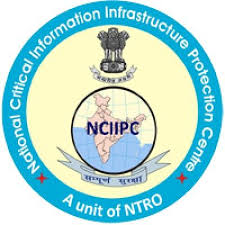

Security operations
Detection, triage, threat hunting, and incident response.
Available for cybersecurity opportunities
I’m Henil Gandhi, a cybersecurity engineer focused on practical defense: security operations, vulnerability management, and risk-aware security programs.
Built around real-world security practice
01 / About
I’m a Master’s graduate in Cyber Forensics & Security from the Illinois Institute of Technology. I help organizations improve their security posture through security operations, governance, risk and compliance, and vulnerability management.
My work combines a foundation in vulnerability assessment and penetration testing with an interest in practical, measurable defense—from alert triage and incident response to risk assessment, control validation, and remediation.
Let’s work together →Detection, triage, threat hunting, and incident response.
Security controls aligned to NIST, ISO 27001, and business risk.
Prioritization, validation, remediation, and continuous improvement.
02 / Expertise
Every tool and framework below is carried forward from the live portfolio, organized into a stronger visual system.
03 / Selected work

SOC LAB / AUTOMATION
Designed a production-grade SOC and EDR lab with centralized detection, automated response, and incident case management.

SECURITY PROGRAM
Enterprise-style vulnerability management across Windows, Linux, and web applications.

INVESTIGATION LAB
Investigation workflows for suspicious emails, spoofed domains, malicious URLs, and attachments.
OPEN SOURCE
A penetration-testing toolkit for streamlined reconnaissance, vulnerability assessment, and security testing workflows.

RESEARCH PAPER
Research examining common web application weaknesses and practical security best practices.
04 / Credentials
Microsoft

CompTIA

SecOps Group

IBM
05 / Recognition
Honored for responsibly disclosing security vulnerabilities and contributing to a safer digital ecosystem.


06 / Writing
Practical observations, career reflections, and hands-on cybersecurity work.
CAREER / MEDIUM
From rejections to results: the journey to landing a first cybersecurity internship in the United States.
Read on Medium ↗TECHNICAL / MEDIUM
Designing a real-world SOC and EDR automation lab with Wazuh, Shuffle SOAR, and IRIS.
Read on Medium ↗07 / Contact
I’m open to cybersecurity opportunities and conversations about security operations, vulnerability management, GRC, and applied security research.